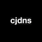
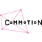
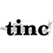

Free Recommendations

Cjdns
Cjdns is a networking protocol, a system of digital rules for message exchange between computers. "Instead of letting other computers connec…

Commotion
Uses mobile phones, computers, and wireless routers to create decentralized mesh networks.
Enigmabox
Plug and play cjdns appliance, offering a distributed and end-to-end encrypted telephony and email service.

tinc
Free software daemon that uses tunnelling and encryption to create a secure private network
Notes
A mesh-networks is a decentralized peer-to-peer network, with user-controlled physical links that are usually wireless.
“Mesh networking (topology) is a type of networking where each node must not only capture and disseminate its own data, but also serve as a relay for other nodes, that is, it must collaborate to propagate the data in the network.“
deslibera*